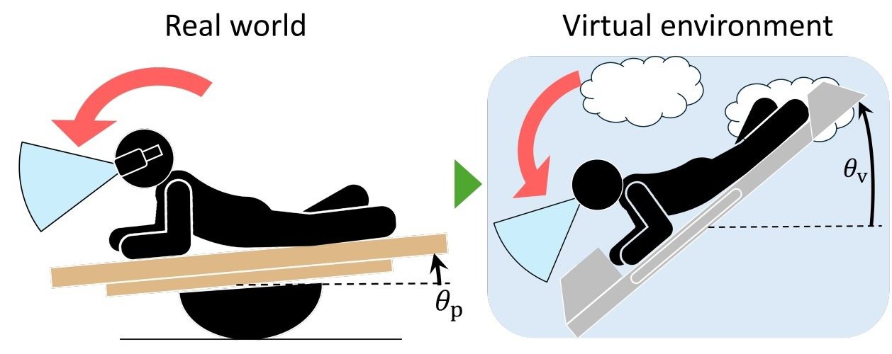
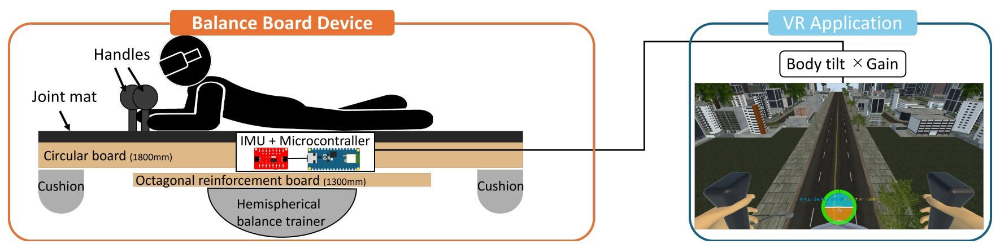
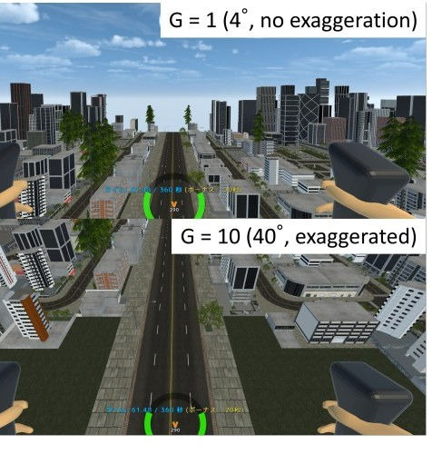

1アイデア：体は小さく、見た目は大きく傾ける
大掛かりな動く台を使わずに、急な角度で飛ぶ感覚を出したい。

これまでの方法
うつ伏せで乗るVR飛行体験では、機体の姿勢をそのまま台の傾きとして体に返すのが一般的です。急な角度を出すには体も大きく傾ける必要があり、モーターで動く台が要ります。安全面の不安が増え、装置も複雑で高価になります。
この作品の方法
体の傾きは最大約4°と小さいまま、VR内の機体の傾きだけを大きく見せます。視覚と同期した体の傾きが、実際より大きく感じられる現象（傾斜錯覚、illusory self-tilt）を利用する狙いです。
この現象を「うつ伏せ」で、しかも「自分で傾きを作る」飛行体験に使った例はほとんどありません。うつ伏せを選んだのは、重心の前後移動がそのまま機体の機首の上げ下げ（ピッチ）に対応するためです。
2全体構成
天板の傾きをVRアプリに送り、ゲインを掛けて機体に反映する。

- 体験者が重心を前後に移すと、天板が傾く。
- 天板に付けたIMU（BNO086）が傾きをクォータニオンとして取り、Arduino Nano ESP32 がWebSocketで約100 HzでPCへ送る。
- PCのUnityアプリが傾きにゲイン G を掛け、機体のピッチ角にする。
- Meta Quest 3（PCと有線Link）に、大きく傾いた映像が映る。
3入力装置：前後にだけ傾くバランスボード
安全のため、傾きは小さく、方向は1つに絞っています。
| 部品 | 内容 |
|---|---|
| 天板 | バーチ合板の円形、直径1800 mm・厚さ30 mm。うつ伏せで乗り、2本のハンドルを握る |
| 補強板 | 八角形、幅1300 mm・厚さ24 mm。天板の下に固定 |
| 支点 | 半球状のバランストレーナー（BOSU Pro NexGen、直径650 mm） |
| センサー | IMU（SparkFun VR IMU Breakout、BNO086）＋ Arduino Nano ESP32 |
左右は止める
天板に固定した発泡ポリスチレンのブロックで左右の動きを止めています。
前後は約4°まで
同じブロックで前後の傾きも最大約4°に抑えています。当たる面にはウレタンのクッションを置いて衝撃を和らげています。
測るのは天板の傾き
体験者は天板に密着しているので、天板の傾きを体の傾きの代わりとして使います。体重や重心位置そのものは測っていません。
4傾きの誇張：線形ゲイン
機体のピッチ角を、天板の傾きに倍率（ゲイン）を掛けて決めます。
| ゲイン G | 天板4°のときの機体の傾き |
|---|---|
| 1 | 4° |
| 5 | 20° |
| 10 | 40° |
| 15 | 60° |
| 20 | 80° |

1回の飛行の中でゲインが上がっていく
コースに等間隔で置いた4つのチェックポイントで、コースを5区間に分けています。1つ通るたびにゲインが 1 → 5 → 10 → 15 → 20 倍と上がり、「体の傾き＝機体の傾き」から「体よりはるかに大きく傾いて見える」状態へ移っていきます。
5VRアプリ
一人称で飛ぶ、約3分の直線コース。
- Unity 2022.3.52f1 で作り、Meta Quest 3 をPCに有線（Link）でつないで表示。頭の動きはそのまま反映します。
- ボードは前後にしか傾かないため、コースは直線。体験者は高度を操作してチェックポイントを通ります。
- コースは、山の上 → S字に川が流れる峡谷 → 高層ビルの街、の3つの場面です。
- 機体は傾き θv で動く簡単な滑空モデルで飛びます。機首を下げると速くなるため、ゲインが大きいほど、同じ体の傾きでも速度の変化が大きくなります。
- カウントダウンからゴール・リザルト表示までのゲーム進行、リングやチェックポイントの通過判定、タイム・ランキング表示を備えています。
体験の流れ
スタッフの補助でボードに乗り、VRゴーグルを着けて約3分飛びます。重心を前後に動かして天板を傾け、機体のピッチを操作しながら、等間隔に置かれたチェックポイントを通ってゴールを目指します。
UnityC#Meta Quest 3IMU（BNO086）Arduino Nano ESP32WebSocket
6これまでの歩み
B3研修のチーム制作から始まり、体験してもらいながら改善を重ね、大学のイベントでの体験展示と2つの学会発表へ。
いばらき×立命館DAYとRITSUMEIKAN GLOBAL WEEKの体験展示で、合わせて100人以上に体験してもらいました。
NHKの取材を受けました（放送時期は未定）。
- 2026年2月ごろ研究室のB3研修のチーム制作として開始。最初はパルクールを題材にする予定だったが、途中でVRグライダーに変更。
- 2026年5月17日いばらき×立命館DAY2026（立命館大学 大阪いばらきキャンパス）で体験展示。
- 2026年9月ヒューマンインタフェースシンポジウム2026（岡山大学）で発表し、優秀プレゼンテーション賞を受賞。
- 2026年11月RITSUMEIKAN GLOBAL WEEK 2026（大阪いばらきキャンパス）で体験展示。
- 2026年11月16〜18日ACM VRST 2026（東北大学、仙台）でデモ発表。
体験してもらいながら改善
展示の前から、研究室の学生や先生方に何度も体験してもらい、意見をもとに調整を重ねました。
酔いにくく、軽快に
機体の動き方を調整してVR酔いを起こしにくくし、入力の遅れや処理の重さも抑えました。
誰でも簡単に
初めての人でもすぐ操作できるようにし、子ども向けには横方向の入力を抑えた簡単なモードも用意しました。
風と音で分かりやすく
速度に合わせて送風機の風と風の音を変え、速さを体でも感じられるようにしました。
迷わない案内
次に向かうリングを示す矢印と、逆向きに飛ぶと出る逆走の警告表示・警告音を付けました。
学会発表では、研究のテーマである傾斜錯覚を確かめやすくするため、操作を前後だけに絞ったシンプルな構成にしています。
7論文・発表
SKY HIGH!!!: A VR Flight Experience Using Tilt Illusion in a Prone Posture Tenro Hanamitsu, Hideto Niimi, Go Nakano, Yusei Yoshida, Ryoichi Watanabe, Marie M. Morita, Satoshi Hashiguchi, Fumihisa Shibata, Asako Kimura. 32nd ACM Symposium on Virtual Reality Software and Technology (VRST 2026), Demo, Sendai, Japan, November 2026. doi.org/10.1145/3822517.3849972
SKY HIGH!!!：腹臥位における傾斜錯覚を利用したVR飛行体験 新美 秀人, 花光 天朗, 中野 剛, 吉田 悠誠, 渡部 綾一, 森田 磨里絵, 橋口 哲志, 柴田 史久, 木村 朝子. ヒューマンインタフェースシンポジウム2026（2026年9月、岡山大学）. 優秀プレゼンテーション賞（審査員による選考）（受賞者一覧）
8今後の課題
- 今のゲインは、機体の傾きだけでなく速度の変化にも効いているため、2つの影響をまだ切り分けられていません。
- 速度を揃えたうえで、ゲインが傾きの感じ方・飛行感・VR酔いにどう影響するかを評価する予定です。
- デモ段階のため、錯覚の効果はまだ定量的に評価していません。